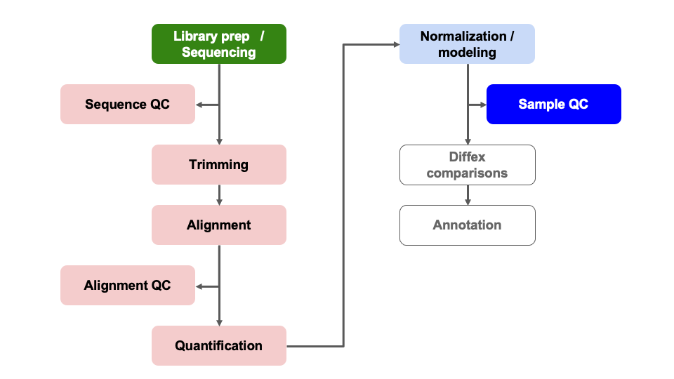
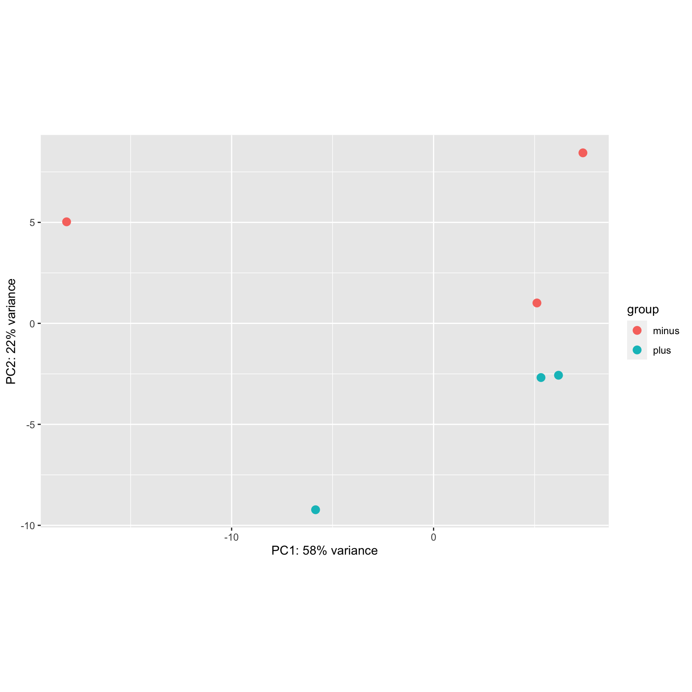

Module 09: Sample Visualizations for Quality Control
UM Bioinformatics Core
2022-08-04
Objectives
- Generate common QC visualizations
- Understand how to interpret QC visualizations
- Understand when to revise the model used in the DESeq2 initialization
- Understand the pitfalls of post-hoc analysis
- Describe the causes and implications of batch effect or other QC issues in an RNA-Seq experiment
Differential Expression Workflow
Prior to testing for differential expression between our comparisons of interest, we’ll first generate plots that will assess how well our samples match up with our expectations (based on their treatment groups) and what we might expect to see from our differential expression comparisons.

Sample Visualizatons for Quality Control
We have discussed some aspects of quality control assessment at the sequencing data level. Today we will outline sample-level and gene-level quality control assessments to determine what we should expect for our differential expression comparisons.
To do this, we will first assess the similarity of our samples by using principal component analysis (PCA). This will allow us to determine how well patterns in the data fits our expectations from the experiments design and possible sources of variation.
Other common visualizations that we generate for our analyses include expression heatmaps, sample correlation heatmaps, and boxplots of raw and/or normalized counts, the code for which (due to time restrictions) can be found as bonus content through the materials for today and in the bonus content module.
Principle Component Analysis (PCA) Plots
A common and very useful plot for evaluating how well our samples cluster by treatment groups are Principle Component Analysis (PCA) plots. PCA is used to emphasize variation and bring out patterns in large datasets by using dimensionality redution.
This image from a helpful step by step explaination of PCA helps to illustrate the principle component projections for two genes measured in approximately 60 mouse samples. Generally, this process is repeated and after each gene’s contribution to a principle component or weight is determined, the expression and weight are summed across genes for each sample to calculate a value for each principle component.

Note: A more detailed overview of the PCA procedure is outlined in a Harvard Chan Bioinformatic Core training module and is based on a more thorough description presented in a StatQuest’s video. Additionally, this TowardsDataScience blog post goes through the math behind PCAs.
Interpreting PCA plots
For most bulk RNA-seq experiments, we expect the majority of the total variance to be explained by the first two or three principle components.

In this plot, which is similar to what we’ll generate below for our data, where principle component 1 (PC1) explains ~80% of the variance in our data while principle component 2 (PC2) explains ~12% of the variance, which fits that expections.
[Question]: How might we interpret the variance explained by each principle component in the context of the labeled sample points?
For more information, this helpful overview of PCA basics walks through both the generation and interpretation of PCA plots.
Evaluating batch effects or confounders
PCA plots are also useful for evaluating the impact of factors other than the experimental treatment or group.
At times, batch effects can be quite obvious, such as this example from the DESeq2 vignette, where samples within each treatment group look staggered into two subgroups.

If we color only by sequencing run type (paired-end vs. single-end), we see that PC2 (29% of variance) is primarily explained by this technical covariate.

However, the samples are clearly seperated by experimental condition on PC1 and since we have non-confounded batches, if we saw this pattern in our data we could incorporate the technical covariate into our model design, such as outlined in the DESeq2 vignette.
Click for complex design discussion
In experiments with more complex designs, such as when there are interesecting/multiple treatment conditions, it can be less clear what covariants are influencing expression, such as illustrated from this documenation for a microarray analysis tool. From the PCA labeled by experimental treatment, we see that samples from the treatment group do not cluster together and that there is high variance across all treatment groups. However, when
the plot is color coded by the technical batches of probe labeling, we
see that the patterns in the data are better explained by batch than the
experimental conditions.
However, when
the plot is color coded by the technical batches of probe labeling, we
see that the patterns in the data are better explained by batch than the
experimental conditions. 
Plot Setup
We’ve already loaded the libraries we need for this module. We have
also thought ahead in the previous module and created the
outputs/figures and outputs/tables
directories.
PCA Plot initialization
Below, we will plot the rlog normalized data and generate the PCA
projections for the top 500 using the plotPCA function from
DESeq2, specifying condition as the condition of interest,
and view the simple plot generated by the function.
pca_plot = plotPCA(rld, intgroup = c('condition'), ntop = 500)
pca_plot
The samples don’t appear to cluster too tightly on their
condition, but we do observe that they do separate in PC2.
With real data, it is often the case that data doesn’t cluster as well
as you’d expect, or that the covariate of interest is not associated
with the first (or sometimes second or third) principal component. That
doesn’t necessarily mean the experiment is a failure, but it does raise
questions such as “What is associated with PC1?” Sometimes we can’t
answer a question like this if we don’t have any sample measure to color
on in the PCA.
Next, let’s save this plot as a file in our
outputs/figures folder.
pdf(file = file.path('outputs', 'figures', 'PCA_rlog_condition.pdf'))
pca_plot
dev.off()Alternatively, since pca_plot is a ggplot,
we can also use ggsave().
ggsave(
filename = file.path('outputs', 'figures', 'PCA_rlog_condition.pdf'),
plot = pca_plot,
width = 6, height = 6, units = 'in')Exercise - Customize the PCA
It turns out that
pca_plotobject is aggplot. You can see this withclass(pca_plot). This means we can use what we learned at the end of the Computational Foundations Workshop to modify this plot as we might see necessary. Try doing the following to thepca_plot:
- Add a title and subtitle to the plot using the
labs()function.- Change the theme of the plot with
theme_bw().- Challenge: Change the legend title to “Condition”. Hint, you can do this with the
labs()function too, using the corresponding aesthetic mapping (e.g. “color”).Remember
ggplot2adds plot components in layers, and you can add additional layers with the+sign. So if the plot already exists as an object, aspca_plotdoes in this case, you can add to it likepca_plot + ...
Solution
Here is one possible answer:
pca_plot +
labs(
title = 'PCA Plot',
subtitle = 'Top 500 variable genes',
color = 'Condition') +
theme_bw()Checkpoint: If generated and saved the
pca_plot PCA plot, please indicate with the green ‘check’
button. Otherwise, please use use the red ‘x’ button in your zoom
reaction panel to have this step repeated.
[Breakout Exercise 1] - Imagine a heatmap
Plotting the expression values across all samples for the top variable genes in an experiment can help to visualize how samples cluster together by their expression profiles. When combined with phenotypic data, it can help show how samples with different treatments behave relative to one another. Let’s work through this exercise in small groups and generate a heatmap of the data we’ve been working with.
Transferring our plot to our local computer
Rstudio server allows us to download files through the interactive
file panel on the right side. If we navigate into the plot subfolder and
select the PCAplot_rlog_condition.pdf or the file, we can
then click the blue gear symbol labeled More and select
Export.... We should see a prompt regarding the name of the
file and if we click Download the file should show up in
your local “Downloads” folder.
Optional - Scree Plot example
Bonus: Click for example code for generating a ScreePlot
A screeplot is a way to visualize the variance explained by all principle components. To generate a scree plot, the PCA results need to be used independently of plotting, such as described by this statquest post and replicated below.
# generate PCA loadings
pca = prcomp(t(assay(rld)), scale=TRUE)
## get the scree information
pca.var = pca$sdev^2
scree = pca.var/sum(pca.var)
p = barplot((scree[1:10]*100), main="Scree Plot", xlab="Principal Component", ylab="Percent Variation")
print(p) [,1]
[1,] 0.7
[2,] 1.9
[3,] 3.1
[4,] 4.3
[5,] 5.5
[6,] 6.7
[7,] 7.9
[8,] 9.1
[9,] 10.3
[10,] 11.5
Summary
In this section, we:
- Discussed variance within treatment groups
- Discussed technical artifacts, including batches
- Learned to generate PCA plots
Sources
- HBC QC tutorial: https://hbctraining.github.io/DGE_workshop/lessons/03_DGE_QC_analysis.html
- Detailed Heatmap tutorial from Galaxy: https://training.galaxyproject.org/training-material/topics/transcriptomics/tutorials/rna-seq-viz-with-heatmap2/tutorial.html
- PCA Overview: https://blog.bioturing.com/2018/06/14/principal-component-analysis-explained-simply/
These materials have been adapted and extended from materials listed above. These are open access materials distributed under the terms of the Creative Commons Attribution license (CC BY 4.0), which permits unrestricted use, distribution, and reproduction in any medium, provided the original author and source are credited.